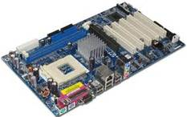
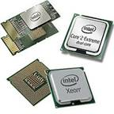
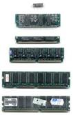
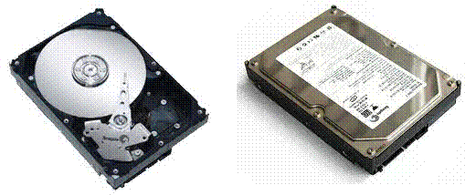
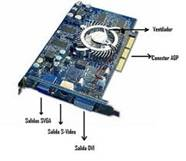
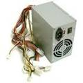

El Hardware

1.- La placa base llamada también placa madre, y es donde van insertados todos los componentes que constituyen el ordenador, tiene multitud de conectores, para el microprocesador, para la fuente de alimentación, para el disco duro, para distinto tipo de tarjetas y periféricos, como el teclado y el ratón. También dispone de diversos puentes de configuración, para la velocidad del microprocesador, para habilitar ó deshabilitar diferentes opciones, dispone además de una batería para mantener algunas configuraciones como el día y la hora.
2.- El microprocesador , que es digamos "el corazón" del PC y es el encargado de procesar todos los datos que circulan por el ordenador, y de dirigirlos mediante unos "buses" (circuitos) al sitio correspondiente, y además lo hará a más o menos velocidad, dependiendo de la marca y modelo del mismo, así como de su velocidad de trabajo, cuando dices he comprado un ordenador Intel core dúo
3.- La memoria , que normalmente la llamamos memoria RAM es un tipo de memoria que se graba y se borra, que consiste en poder acumular datos provisionalmente, que iremos necesitando según vamos trabajando, y el microprocesador ira cogiendo y dejando, hoy día es recomendable un mínimo de 1 ó 2 Gigas de RAM, si disponemos de poca memoria RAM el microprocesador utilizara el disco duro como memoria RAM y al ser mucho mas lento se nos ralentizará el ordenador existen diferentes formatos de memoria RAM los mas usados hoy en día son SDR, DDR, DDR1 y DDR2. Hay otro tipo de memoria, memoria ROM que es un chip que se graba de fabrica y que es de solo lectura y se utiliza para informar al microprocesador en que placa madre se encuentra instalado para poder trabajar,
4.- El disco duro, que es el lugar donde el PC lo tiene guardado todo: una especie de contenedor que va acumulando datos, programas, fotos, en fin todo lo que queramos mientras no sobrepasemos su capacidad. Pero hoy en día, los discos duros tienen tanta capacidad que es muy difícil llenarlos (salvo que nos dediquemos a temas que consumen mucho, como edición de vídeo, películas completas, etc...). La capacidad de un disco duro se mide en Gigas, y ya es frecuente ver discos de más de 600Gb, e incluso de 1 ó 2 Terabytes. El disco duro es una caja metálica que lleva en su interior herméticamente cerrada, una serie de discos que contienen unas pistas donde unos cabezales se encargan de grabar, leer, borrar, el contenido de esas pistas.
5.- La tarjeta de grafica que no es más que un circuito encargado de procesar los datos y transformarlos en información comprensible y representable en un dispositivo de salida, como un monitor y que no pasaré a detallar, únicamente decir que tiene unos conectores donde se "enchufa" la pantalla y a veces puede venir ya en la propia placa base, como ocurre en la mayoría de los ordenadores portátiles. Prestaremos mucha atención a las características de la tarjeta grafica, si nos vamos a dedicar a diseño grafico, pero si nos vamos a dedicar a jugar con juegos en 3D es cuando tendremos que disponer de las tarjetas más potentes y mas actualizadas ya que los juegos requieren de las tarjetas mas potentes del mercado.

6.- La fuente de alimentación, es la parte del ordenador que gestiona la corriente de entrada de 220 voltios y a su vez la transforma a 5 y 12 voltios y la distribuye a los distintos componentes del ordenador, si vamos a enchufar varias placas en los slots de la placa base, como tarjeta grafica potente, tarjeta de sonido, tarjeta de red, tarjeta capturadota de video ó un sin fin de tarjetas mas que existen la fuente de alimentación debe ser potente.7.- Periféricos se denomina periféricos a todos los aparatos o dispositivos auxiliares e independientes conectados al ordenador. Nos sirven para poder adquirir datos del exterior del ordenador y para poder sacar datos del ordenador.
Son periféricos: el ratón, teclado, impresora, Micrófono, Escáner, Cámara Web, Lápiz óptico, Pantalla táctil, Cámara digital, Memoria flash, MODEM, etc…
Hasta aquí lo que he considerado "indispensable" conocer
con respecto al Hardware, lo único que queda de
resaltar es el mantenimiento que debemos llevar, que lo trataremos en otra
sección.